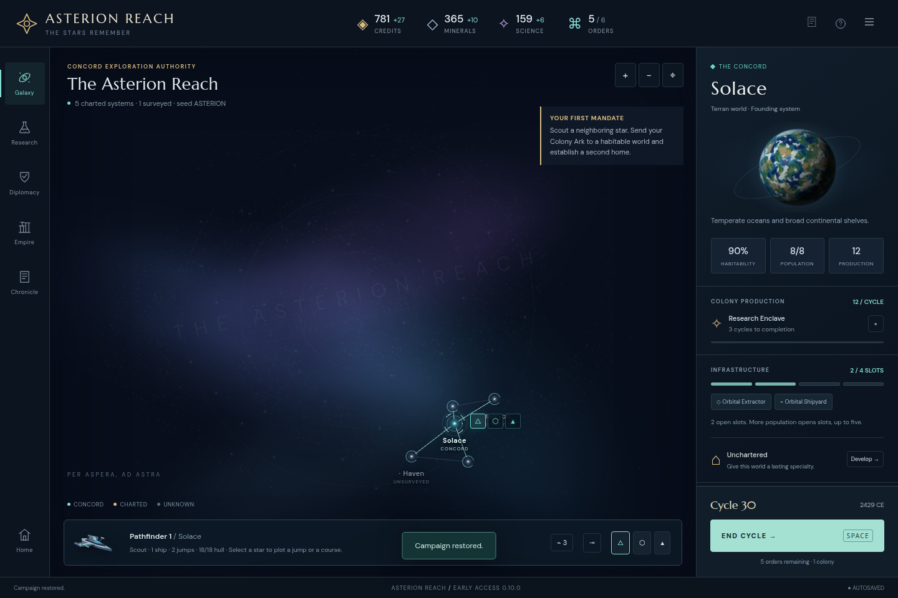

ASTERION REACH / ENGINE EVIDENCE / STAGE10
One save format.
Across ten stages of play.
Real campaign exports and ordinary-command campaigns regenerated under pinned historical engines, imported without rewriting their contents. Resumed under 60fd9f8 for up to twenty cycles each.
14/14historical saves accepted
244resumed cycles / exact reload checks
27legacy over-capacity colonies
0audit failures
Continuity means retaining a campaign, not freezing its future.The current rules govern alignment funding, infrastructure, discoveries, AI and shared passive repairs. This audit does not require historical and current engines to produce the same future outcome. A completed imported campaign remains completed.
What crossed the boundary
119 paid construction queues, 77 discovery events, 8 heritage-bearing fleets and 1 plotted routes were present in the inputs. Import and read-only forecasts preserved the entire state exactly. During resumed play, 168 surviving paid-queue observations retained their original cost and work; historical event bodies and surviving fleet heritage remained intact. Feature counts are occurrences across all14 input saves, not distinct worlds or events across the shared-seed campaigns. Absent newer optional fields needed no manual rewriting.
Browser import and export
Three inputs passed the actual Menu → Import → Restore flow on the frozen Stage10 preview: regenerated original99afa91 cycle30, the previously exported Stage6 cycle40 campaign, and its verified route-bearing cycle63 checkpoint. Empire, Research and Chronicle inspection did not change state. Export and browser autosave reload both matched the historical input’s full parsed JSON, with no page errors.

Reproduce and inspect
node ./audit.mjs \
--repo /path/to/awesome_4x \
--output /tmp/asterion-save-compatibility \
--ui-url http://127.0.0.1:5179
Use --skip-ui for the engine-only audit; the browser pass requires the installed Playwright package and Chromium (override with --chromium /path/to/chrome). The script reads pinned git objects, writes only temporary/archive output, and stores exact input SHA256 and dependency-graph source hashes in results.json. Generated historical input saves and their ordinary-command receipts are in the manifest. Actual Stage6 exports and the verified route checkpoint retain their existing replay provenance.
Limits: This finite sample is targeted compatibility evidence, not a proof for every valid v1 state. Resume policy is passive for the player; current rivals act normally. Destruction, conquest, queue completion and expanded discovery knowledge are legitimate later play. The final cycle67 campaign required an atomic rejected end-turn check rather than twenty more cycles.